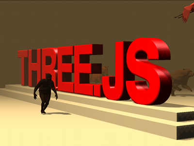

<link rel="import" href="../bower_components/core-icon-button/core-icon-button.html">
<link rel="import" href="../bower_components/paper-dialog/paper-dialog.html">
<link rel="import" href="../bower_components/paper-button/paper-button.html">
<link rel="import" href="../bower_components/paper-dialog/paper-dialog-transition.html">
<polymer-element name="pojoviz-about">
	<template>
		<style>
			paper-dialog {
				width: 600px;
			}
			paper-dialog p {
				font-weight: 100!important;
			}
			paper-button[raisedButton].blue {
	      background: #03a9f4;
	      color: #fff;
	    }
		</style>
		<core-icon-button icon="info-outline" on-click="{{onClick}}"></core-icon-button>
		<paper-dialog id="popup" heading="About" transition="paper-dialog-transition-center">
			<p>
				Made by <a target="_blank" href="https://github.com/maurizzzio">maurizzzio</a>, have fun!
			</p>

			<p>
				Powered by:
			</p>

			<div layout horizontal around-justified>
				<a href="https://d3js.org" target="_blank">
					
				</a>
				<a href="https://threejs.org" target="_blank">
					
				</a>
				<a href="https://github.com/cpettitt/dagre" target="_blank">
					
				</a>
				<a href="https://duckduckgo.com" target="_blank">
					
				</a>
				<a href="https://cdnjs.com" target="_blank">
					
				</a>
			</div>
			<paper-button label="Close" class="blue" raisedButton affirmative autofocus></paper-button>
		</paper-dialog>
	</template>
	<script>
		Polymer('pojoviz-about', {
			onClick: function (event, detail, el) {
				this.$.popup.toggle();
			}
		});
	</script>
</polymer-element>